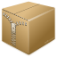
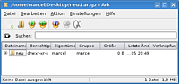

Ark
Archivierte Anleitung
Dieser Artikel wurde archiviert, da er - oder Teile daraus - nur noch unter einer älteren Ubuntu-Version nutzbar ist. Diese Anleitung wird vom Wiki-Team weder auf Richtigkeit überprüft noch anderweitig gepflegt. Zusätzlich wurde der Artikel für weitere Änderungen gesperrt.
Anmerkung: Dieser Artikel ist veraltet, eine Alternative ist der Artikel Ark
Zum Verständnis dieses Artikels sind folgende Seiten hilfreich:
 Ark ist ein Programm, um verschiedene Archiv-Formate in KDE zu verwalten. Archive können eingesehen, erzeugt, geändert und Dateien daraus extrahiert werden. Das Programm kann mit verschiedensten Formaten wie tar, gzip, bzip2, zip, rar und lha umgehen (sofern entsprechende Befehlszeilenprogramme installiert sind, siehe Packprogramme).
Ark ist standardmäßig schon in Kubuntu installiert, kann aber ggf. über das Paket
ark
nachinstalliert werden [1]. Ark arbeitet eng mit Konqueror zusammen um Archive zu bearbeiten. Dies setzt jedoch die Installation des entsprechenden Plugins aus dem Paket kdeaddons [1] voraus.
Für Ark gibt es auch ein Handbuch  .
.
Archive öffnen¶
Um ein Archiv in Ark zu öffnen, wählt man "Datei öffnen" im Menü. Man kann Archivdateien auch öffnen, indem man sie aus dem Dateimanager Konqueror herüberzieht. Normalerweise sind Archivdateien Ark zugeordnet, so dass man einfach mit der rechten Maustaste auf eine Datei klicken und dann den Eintrag "Ark" anwählen kann.
Arbeiten mit Dateien¶
 Wenn ein Archiv einmal geöffnet ist, kann man auf die enthaltenen Dateien verschiedene Funktionen anwenden. Dazu muss man mit der rechten Maustaste auf eine Datei des Archivs klicken oder einfach eine Datei auswählen und das Aktionsmenü benutzen. Folgende Funktionen stehen dann zur Auswahl:
"Entpacken" - Entpackt Dateien an einen angegebenen Ort.
"Löschen" - Entfernt die ausgewählte(n) Datei(en) aus dem Archiv.
"Ansehen" - Öffnet die Datei im integrierten Dateibetrachter oder falls dieser Dateien dieses Typs nicht darstellen kann, mit der vom System als Standard definierten Anwendung. Dies ist auch der Fall, wenn man den internen Dateibetrachter in den Einstellungen deaktiviert hat.
"Öffnen mit..." - Erlaubt, die Datei mit einem ausgewählten Programm zu öffnen.
"Bearbeiten mit..." - Erlaubt, die Datei mit einem ausgewählten Programm zu öffnen. Der Unterschied zu "öffnen mit..." besteht darin, dass die getätigten Änderungen in das Archiv übernommen werden.
Ein Archiv entpacken¶
Ein in Ark geöffnetes Archiv kann entpackt werden. Dazu muss man entweder "Entpacken..." im Menü "Aktion" oder aus dem Kontextmenü (rechter Mausklick) wählen. Im Entpacken-Dialog gibt man an, wohin die Dateien entpackt werden sollen. Ebenso kann man angeben, welche Dateien entpackt werden sollen:
"Aktuell" - Entpackt die zuletzt ausgewählte Datei, auch wenn mehrere Dateien ausgewählt sind.
"Alle" - Entpackt das ganze Archiv.
"Ausgewählte Dateien" - Entpackt alle ausgewählten Dateien.
"Maske" - Hiermit ist es möglich, nur die Dateien zu entpacken, welche dem Muster entsprechen, z.B. *.txt oder *.jpg. Man beachte bitte, dass immer nur ein Muster angegeben werden kann.
In welchen Ordner Dateien entpackt werden, definiert man im Textfeld "Entpacken nach:". Voreingestellt ist der Ordner, in dem sich auch die Archivdatei befindet. Als Option bietet sich an, den Zielordner nach dem Entpacken der Dateien direkt mit Konqueror zu öffnen.
Erzeugen von Archiven und Hinzufügen von Dateien¶
Um mit Ark ein neues Archiv zu erzeugen, wählt man "Datei -> Neu". Hier gibt man den Dateinamen an, sowie die Erweiterung für das gewünschte Archivformat (tar.gz, zip, bz2 usw.). Um einem Archiv einzelne Dateien hinzuzufügen, wählt man dann "Aktion -> Datei hinzufügen...". Möchte man gleich ganze Ordner hinzufügen, wählt man "Aktion -> Ordner hinzufügen..." aus.
Um zu einem Archiv weitere Dateien hinzuzufügen, können diese auch aus einem Konqueror-Fenster auf das Hauptfenster von Ark herübergezogen werden.
Einrichten¶
Das Einstellungs-Menü findet sich unter "Einstellungen -> Ark Einrichten...". Folgende Optionen stehen zur Verfügung.
"Internen Dateibetrachter verwenden" - Falls möglich den internen Dateibetrachter zum Anzeigen von Dateien verwenden.
"Konqueror-Integration verwenden
"Ark Plugin für Konqueror" - Plugin zum Erstellen/Auspacken von Archiven und Hinzufügen von Dateien im Kontextmenü von Konqueror aktivieren.
Hinweis:
Diese Einstellung funktioniert nur, wenn das Konqueror-Integrations-Plugin aus dem Paket kdeaddons installiert ist.
"Bestehende Dateien nur durch neuere Dateien überschreiben" - Wenn neue Dateien zu einem Archiv hinzugefügt werden und in diesem Archiv bereits existieren, so werden mit aktivierter Einstellung nur diejenigen Dateien hinzugefügt, welche neu bzw. neuer als der bestehende Eintrag im Archiv sind.
"Kurze MS-DOS-Dateinamen (8+3) erzwingen (Zip)" - Erzwingt Namen im alten DOS 8.3 Format (8 Zeichen Name, 3 Zeichen Erweiterung).
"Zeilenumbruch von LF nach CRLF (DOS-Notation) ändern (Zip)" - Konvertiert die Zeilenenden in Textdateien vom UNIX-Format ins DOS-Format.
"Symbolische Verknüpfungen als solche speichern (Zip, Rar)" - Im Archiv werden die Verknüpfungen gespeichert und nicht die ganzen Dateien, auf welche die Verknüpfung zeigt.
"Unterordner einbeziehen (Zip, Rar)" - Wenn ein Ordner zu einem Archiv hinzugefügt wird, so werden automatisch auch alle Unterordner darin hinzugefügt.
"Dateien überschreiben (Zip, Tar, Zoo, Rar)" - Es werden beim Auspacken alle bereits auf der Festplatte liegenden Dateien mit den entsprechenden Dateien aus dem Archiv überschrieben.
"Berechtigungen beibehalten (Tar)" - Benutzer, Gruppe und Berechtigungen für die Dateien mit speichern. Nutzen Sie diese Einstellung mit Vorsicht, da hieraus Dateien resultieren können, welche auf einem anderen System keinem gültigen Benutzer gehören.
"Ordnernamen ignorieren (Zip)" - Es werden alle Dateien in den Entpacken-Ordner ausgepackt. Die Ordnerstruktur im Archiv wird dabei ignoriert.
"Dateinamen in Kleinbuchstaben/Großbuchstaben umwandeln (Zip, Rar)" - Alle Dateien mit dem Dateinamen ausschließlich in Klein- (bzw. Groß-)buchstaben auspacken. (Großbuchstaben nur Rar)
- Erstellt mit Inyoka
-
 2004 – 2017 ubuntuusers.de • Einige Rechte vorbehalten
2004 – 2017 ubuntuusers.de • Einige Rechte vorbehalten
Lizenz • Kontakt • Datenschutz • Impressum • Serverstatus -
Serverhousing gespendet von